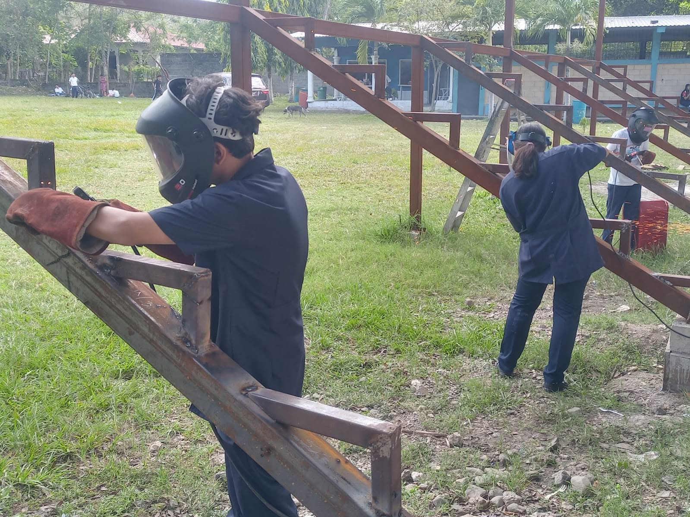
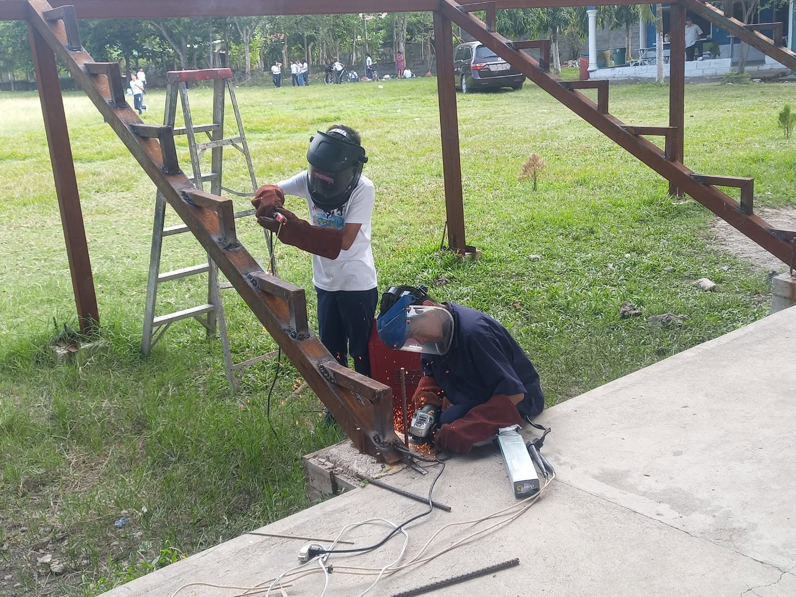
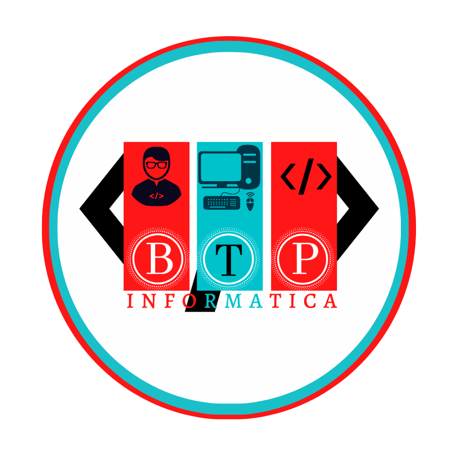
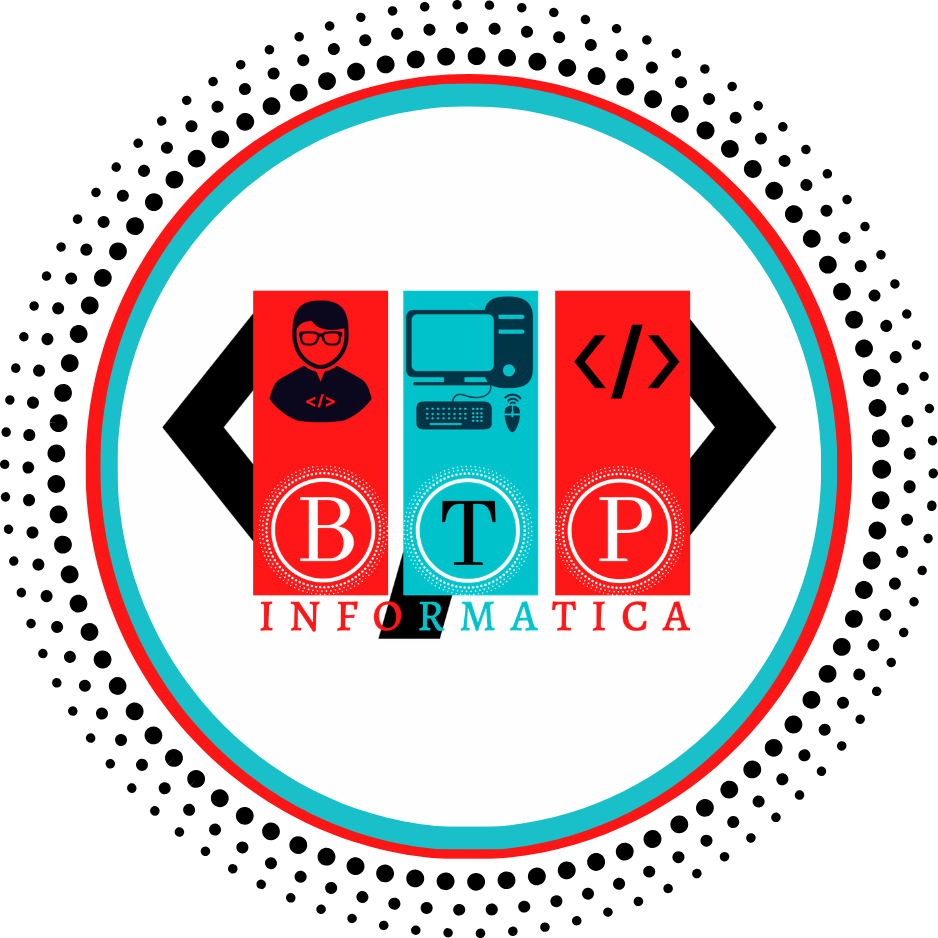
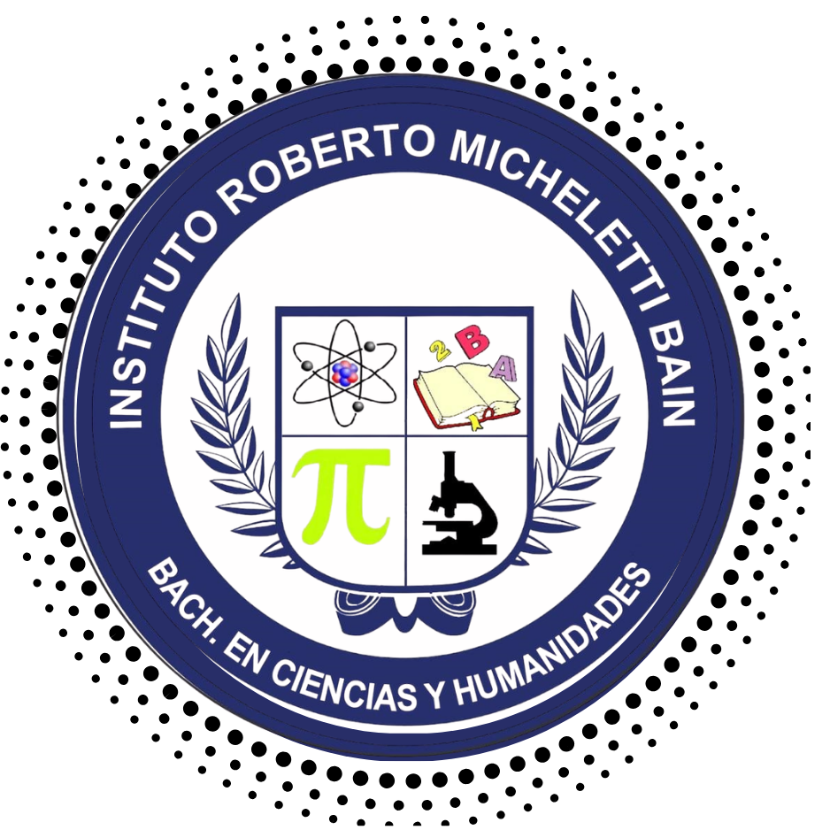

Oferta académica
Niveles y carreras disponibles
La oferta del instituto se organiza en III Ciclo de Educación Básica, III Ciclo con Orientación Técnica y tres bachilleratos.


7mo a 9no grado
III Ciclo de Educación Básica
Modalidad básica para estudiantes de séptimo, octavo y noveno grado, enfocada en fortalecer conocimientos generales y preparar la continuidad académica.
Grados que incluye
- Séptimo grado
- Octavo grado
- Noveno grado


7mo a 9no grado
III Ciclo con Orientación Técnica
El polivalente ofrece orientaciones técnicas para desarrollar habilidades prácticas desde el III Ciclo.

Imagen de Estructuras Metálicas
Estructuras Metálicas
Aprendizaje práctico relacionado con trabajo, medición y construcción de estructuras metálicas.
- Uso responsable de herramientas
- Medición y trazado
- Trabajo en equipo

Imagen de Electricidad
Electricidad
Formación inicial en fundamentos eléctricos, instalaciones y uso responsable de herramientas.
- Principios básicos de circuitos
- Seguridad en el taller
- Prácticas guiadas
Imagen de Corte y Confección
Corte y Confección
Práctica de técnicas básicas de diseño, corte, confección y elaboración de prendas.
- Patronaje inicial
- Uso de materiales
- Acabados y presentación


Educación media
Bachilleratos del instituto
Actualmente se ofrecen tres bachilleratos para estudiantes que continúan su preparación después del III Ciclo.


Bachillerato Técnico Profesional en Informática
Formación técnica orientada al uso de la tecnología, herramientas digitales y fundamentos de informática.
Ideal para estudiantes interesados en computadoras, soporte técnico, herramientas digitales y soluciones tecnologicas.
Ver carrera
Bachillerato Técnico Profesional en Contaduría y Finanzas
Preparación en procesos contables, registros financieros y organización de información económica.
Enfocado en orden, análisis, documentos financieros y responsabilidad en el manejo de registros.
Ver carrera

Bachillerato en Ciencias y Humanidades
Formación académica general para continuar estudios superiores en distintas áreas del conocimiento.
Una ruta académica amplia para quienes buscan preparación general y continuidad universitaria.
Ver carreraCómo elegir
Orientación para tomar una buena decisión
Antes de elegir una ruta, conviene revisar intereses, habilidades, desempeño académico y metas personales. El sitio deja esta información organizada para que estudiantes y familias comparen opciones con claridad.